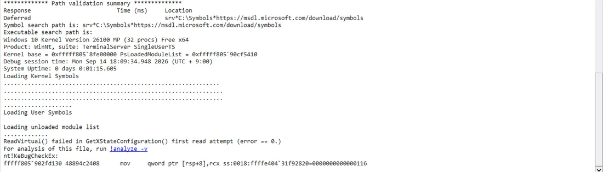
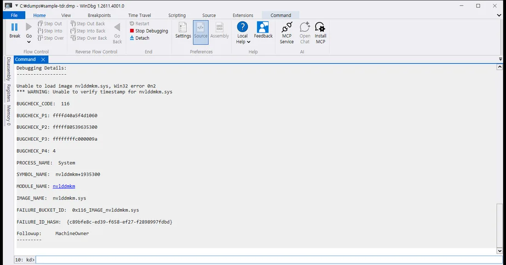
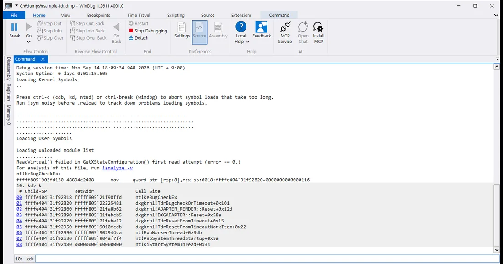

BLUE SCREEN DUMP
블루스크린 덤프는 WinDbg로 원인 모듈까지 직접 확인할 수 있습니다
블루스크린이 남긴 덤프 파일(.dmp)은 Microsoft가 무료로 제공하는 디버거 WinDbg로 열어 볼 수 있습니다. 심볼을 설정하고 !analyze -v를 실행하면 정지 코드와 원인으로 지목된 모듈, 같은 유형끼리 묶는 이름(실패 버킷)이 나옵니다.
덤프에는 실행 중이던 프로그램 이름, 드라이버 목록, 파일 경로 같은 정보가 들어갈 수 있습니다. 다른 사람의 PC에서 나온 덤프는 동의를 받고 다루세요. 이 가이드의 화면은 그래픽 드라이버가 응답하지 못해 생긴 블루스크린(VIDEO_TDR_FAILURE, 0x116) 덤프 하나를 C:\dumps 폴더에서 연 것이며, 개인을 알아볼 수 있는 정보가 없는 부분만 실었습니다.
1. 덤프 파일 위치와 WinDbg 설치
- 덤프 파일 찾기 — 작은 메모리 덤프는 보통
C:\Windows\Minidump에 날짜별 .dmp로 쌓이고, 커널·전체 덤프는C:\Windows\MEMORY.DMP하나로 저장됩니다. 어떤 종류가 남을지는 '시작 및 복구' 설정에 따라 다르고, 이 폴더들은 보호되어 있어 파일을 다른 폴더(예:C:\dumps)로 복사해 열면 편합니다. - WinDbg 설치 — Microsoft Store에서 WinDbg를 받거나, 명령 프롬프트에서
winget install --id Microsoft.WinDbg -e를 실행합니다. 이 가이드는 winget에서 확인한 버전 1.2611.4001.0(게시자 Microsoft)과 Windows 11에서 직접 실행해 작성했습니다.
2. 덤프 열고 심볼 설정하기
- 덤프 열기 — WinDbg의 파일 메뉴에서 덤프 파일 열기를 고르거나, 명령 프롬프트에서
windbgx -z "C:\dumps\sample.dmp"처럼 실행합니다. 열리면 아래처럼 정지 코드가 걸린 위치(nt!KeBugCheckEx)와 "분석하려면!analyze -v를 실행하라"는 안내가 나옵니다. 아래 화면에는 덤프를 만든 시각(Debug session time)과 부팅 후 경과 시간(System Uptime)도 함께 보입니다.
- 심볼 경로 지정 — 심볼은 함수 이름을 알려 주는 파일입니다. 명령 입력 칸에
.symfix C:\Symbols를 입력하고 Enter를 누르면 Microsoft 공개 심볼 서버(https://msdl.microsoft.com/download/symbols)와 내려받은 심볼을 저장할 폴더가 지정됩니다. 이어서.reload를 입력합니다. 위 화면의 심볼 검색 경로는 시작할 때-y옵션으로 같은 값을 준 것입니다. - 명령은 한 줄에 하나씩 — 이 버전에서는
.symfix C:\Symbols; .reload처럼;로 이어 쓰면.symfix가 뒷부분까지 경로로 읽어 문법 오류가 났습니다..reload와.cls뒤에 다른 명령을 붙인 경우에도 마찬가지였습니다. 명령은 하나씩 입력하세요.
3. !analyze -v 실행하고 결과 읽기
- 실행 — 명령 칸에
!analyze -v를 입력합니다. 처음에는 심볼을 내려받느라 화면 아래에*BUSY*가 표시되고, 이 실습에서는 1~3분쯤 걸렸습니다. 같은 윈도우 빌드의 다른 덤프는 저장된 심볼을 써서 더 빨리 끝납니다. - 결과의 끝부분을 봅니다 — 아래 화면은 분석이 끝난 직후의 명령 창입니다. 핵심 항목이 모여 있습니다.

- BUGCHECK_CODE — 정지 코드입니다. 이 예시의 116은
VIDEO_TDR_FAILURE(0x116)로, 그래픽 드라이버가 정해진 시간 안에 응답하지 못했고 복구도 실패했다는 뜻입니다. 코드의 의미는 정지 코드 확인 가이드에서 찾을 수 있습니다. - BUGCHECK_P1~P4 — 코드마다 의미가 다른 매개변수입니다. 이 예시의 P2는 응답하지 않은 드라이버 모듈 안을 가리키는 주소였고, 아래 MODULE_NAME이 그 모듈로 나왔습니다. 모든 코드가 이렇지는 않으니 코드별 설명을 확인하세요.
- PROCESS_NAME — 오류가 감지됐을 때 실행 중이던 프로세스입니다. 이 예시는
System(커널 작업)이고, 프로그램 이름이 나오더라도 그 프로그램이 원인이라는 뜻은 아닙니다. - SYMBOL_NAME · MODULE_NAME · IMAGE_NAME — 문제 위치로 지목된 모듈과 그 안의 위치입니다. 예시에서는 NVIDIA 그래픽 드라이버(
nvlddmkm.sys)입니다. 심볼이 없으면 함수 이름 대신 숫자 위치만 나옵니다. - FAILURE_BUCKET_ID — 같은 원인의 크래시를 묶는 이름입니다. 덤프가 여러 개일 때 이 값이 같은지 비교하면 같은 지점에서 반복되는지 알 수 있습니다.
- Followup — 담당 구분 표시로, 보통
MachineOwner는 별도 담당자가 지정되지 않았다는 뜻으로 보면 됩니다. 원인이 확정됐다는 표시가 아닙니다.
4. 호출 스택 확인하기
k입력 — 명령 칸에k를 입력하면 오류가 감지되기까지 어떤 함수가 어떤 함수를 호출했는지 나옵니다. 위쪽이 가장 최근 호출이고 아래로 갈수록 오래된 호출입니다.
- 읽는 법 — 맨 위
nt!KeBugCheckEx는 블루스크린을 일으키는 함수라 원인이 아니라 "여기서 멈췄다"는 표시입니다. 바로 아래dxgkrnl!TdrBugcheckOnTimeout이 이 블루스크린을 요청한 쪽이고, 이름에서 그래픽 응답 시간 초과(TDR) 처리 과정임을 알 수 있습니다. 즉 스택은 "누가 멈추라고 했는지"를 보여 주고, 응답하지 않은 드라이버는 위의 MODULE_NAME(nvlddmkm)이 알려 줍니다. 둘을 함께 봐야 합니다.
5. 자주 나오는 경고와 주의점
- Unable to load image … Win32 error 0n2 / Unable to verify timestamp — 이 가이드의 실습에서도 나왔지만 원인 모듈과 실패 버킷은 정상으로 표시됐습니다. 작은 덤프에는 드라이버 파일이 들어 있지 않고 분석하는 PC에도 같은 파일이 없을 때 흔히 나오는 안내입니다.
- 모듈이
nt로 나올 때 — 윈도우 커널 안의 코드에서 오류가 감지됐다는 뜻입니다. 외부 드라이버가 아닌 경우가 많아 메모리나 CPU 같은 하드웨어 문제도 함께 의심하게 되지만, 이것만으로 단정하지 말고 덤프를 여러 개 비교하세요. 메모리(RAM) 검사 방법도 도움이 됩니다. - 지목된 모듈 = 범인이라는 뜻은 아닙니다 — WinDbg의 분석도 추정입니다. 같은 모듈이 여러 덤프에서 반복해서 나오는지, 최근에 바뀐 드라이버가 있는지를 함께 확인하세요.
- 덤프를 만든 시각을 확인하세요 —
Debug session time은 덤프가 만들어진 시각입니다. 이벤트 로그와 대조할 때는 같은 시각대의 기록을 찾아야 합니다. 이벤트 뷰어 가이드를 참고하세요.
6. 명령줄로 결과를 파일에 저장하기
화면에서 복사하기 번거롭다면 WinDbg와 함께 설치되는 콘솔 디버거 cdb.exe로 결과를 텍스트 파일에 저장할 수 있습니다.
- 명령 프롬프트에서 아래처럼 실행합니다(한 줄). 끝에
q를 붙여야 분석이 끝난 뒤 디버거가 종료됩니다.cdb -z "C:\dumps\sample.dmp" -y "srv*C:\Symbols*https://msdl.microsoft.com/download/symbols" -c "!analyze -v; q" > result.txt result.txt를 열어 위에서 설명한BUGCHECK_CODE,MODULE_NAME,FAILURE_BUCKET_ID를 찾으면 됩니다. 이 방식도 이 PC에서 확인했습니다.- Microsoft Store로 설치한 WinDbg의
cdb.exe는 보호된WindowsApps폴더 안에 있고 경로에 버전이 들어가 업데이트하면 바뀝니다. 실행되지 않으면 그 폴더에서cdb.exe의 현재 위치를 확인하세요.
이 사이트의 미니덤프 분석기와의 관계
미니덤프·이벤트 로그 분석기는 WinDbg를 설치하지 않고도 덤프에서 정지 코드, 당시 프로세스, 원인 모듈 후보를 먼저 보여 줍니다. 작은 메모리 덤프는 같은 Microsoft 공개 심볼로 함수 이름과 문제 위치도 표시하고, 같은 유형끼리 묶는 이름(실패 버킷)은 WinDbg로 형태를 확인한 일부 코드에 한해 만듭니다. WinDbg의 분석 규칙 전체를 구현한 것은 아니므로, 정밀한 판정이 필요하면 이 가이드의 방법으로 WinDbg 결과를 함께 확인하세요.
순서와 명령은 Windows 11 PC에서 WinDbg 1.2611.4001.0으로 직접 실행해 확인했습니다. 한 덤프(0x116)로 확인한 화면이므로 다른 정지 코드에서는 항목의 모양과 의미가 다를 수 있습니다.
자주 묻는 질문
- WinDbg 분석이 처음에 너무 오래 걸려요. 처음 한 번은 Microsoft 공개 심볼 서버에서 심볼 파일을 내려받느라 시간이 걸립니다. 이 가이드의 실습에서는 한 덤프를 분석하는 데 1~3분 정도 걸렸고, 받은 심볼은 지정한 폴더에 저장되어 같은 윈도우 빌드의 다른 덤프는 훨씬 빨리 끝납니다. 화면 아래에 심볼을 받는 중이라는 표시가 보이면 기다리세요.
- !analyze -v 결과의 모듈이 nt로 나오면 윈도우 자체가 문제인가요? nt는 윈도우 커널(ntoskrnl.exe)입니다. 커널 안의 코드에서 오류가 감지됐다는 뜻이지, 윈도우 파일이 손상됐다는 뜻은 아닙니다. 외부 드라이버가 원인이 아닌 경우에 자주 보이고 메모리나 CPU 같은 하드웨어 문제에서도 나타나지만, 이것만으로 단정할 수는 없습니다. 덤프를 여러 개 비교하고 메모리 검사 같은 확인을 함께 하세요.
- Unable to load image 경고가 나오는데 분석이 틀린 건가요? 작은 메모리 덤프에는 드라이버 파일 자체가 들어 있지 않고 분석하는 PC에도 같은 파일이 없을 때 흔히 나오는 안내입니다. 분석을 못 했다는 뜻은 아니며, 이 가이드의 실습에서도 이 경고와 함께 원인 모듈과 실패 버킷이 정상적으로 표시됐습니다.
- 덤프 파일이나 분석 결과를 다른 사람에게 보내도 되나요? 덤프에는 실행 중이던 프로그램 이름, 드라이버 목록, 경로 같은 정보가 들어갈 수 있습니다. 다른 사람의 PC에서 나온 덤프라면 먼저 동의를 받고, 공유할 때는 덤프 파일 전체보다 !analyze -v 결과의 필요한 부분만 보내는 편이 안전합니다. 보내기 전에 PC 이름이나 계정 이름이 들어 있지 않은지 확인하세요.
참고한 공식 자료
- WinDbg 개요 (Microsoft Learn)
- !analyze 명령 (Microsoft Learn)
- Microsoft 공개 심볼 (Microsoft Learn)
- .symfix 명령 (Microsoft Learn)
- k 명령: 스택 역추적 표시 (Microsoft Learn)
- WinDbg로 커널 모드 덤프 파일 분석 (Microsoft Learn)
이 가이드의 명령 순서와 화면은 직접 실행해 확인한 내용이며, 각 명령의 전체 옵션과 설명은 위 공식 문서를 따르세요.
최종 검토일: 2026-11-27